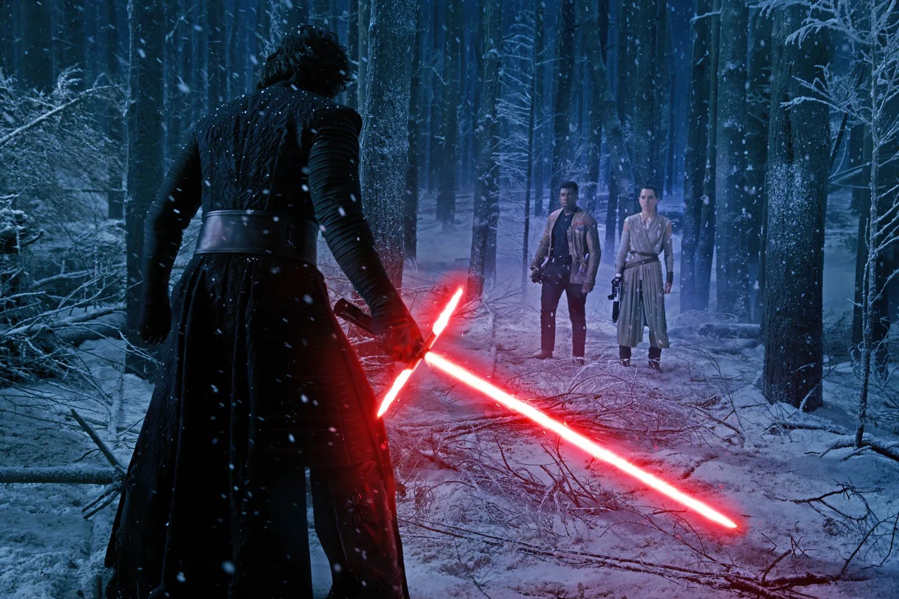
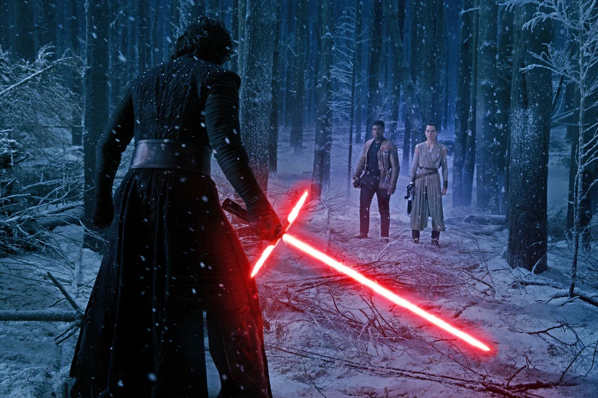

TRAMA
Trent'anni dopo la battaglia di Endor, Luke Skywalker è scomparso. Sia la Resistenza, sostenuta dalla Nuova Repubblica e guidata da Leia Organa, sia il Primo Ordine, nato dalle ceneri dell'Impero Galattico, perlustrano la galassia nel tentativo di trovarlo. Poe Dameron, il miglior pilota della Resistenza, viene mandato su Jakku per recuperare una mappa che si crede conduca a Luke; anche il Primo Ordine, però, sta cercando di recuperarla. Kylo Ren, il generale del Primo Ordine, infatti, atterra su Jakku e attacca il villaggio in cui si trova Poe, quest'ultimo nasconde la mappa nel suo droide, BB-8, e lo manda via. Kylo cattura Poe e ordina agli assaltatori di massacrare gli abitanti del villaggio. Uno degli assaltatori, FN-2187, incredulo di fronte alla brutalità del Primo Ordine, aiuta Poe a fuggire; i due rubano un caccia TIE, ma vengono abbattuti e precipitano su Jakku. FN-2187, ribattezzato "Finn" da Poe, sembra essere l'unico sopravvissuto. Nel frattempo, BB-8 viene trovato da Rey, una ragazza che sopravvive vendendo rottami trovati nel deserto e che è in attesa dei suoi genitori. Finn incontra Rey e BB-8, ma i tre vengono attaccati dal Primo Ordine e fuggono a bordo di una vecchia nave abbandonata, il Millennium Falcon. Han Solo e Chewbecca catturano il Falcon, che era stato rubato loro anni prima. Han rivela che Luke scomparve dopo che uno dei suoi apprendisti passò al lato oscuro. Alla Base Starkiller, un pianeta convertito in una super-arma capace di distruggere interi sistemi stellari, Kylo Ren viene informato dal Leader Supremo Snoke, suo maestro, che l'unico modo per resistere al richiamo del lato chiaro è uccidere suo padre, Han Solo. L'equipaggio del Falcon si reca sul pianeta Takodana per incontrare Maz Kanata, che può aiutare BB-8 a raggiungere la Resistenza. Nei sotterranei del castello di Maz, Rey trova la spada laser appartenuta a Luke e a Dart Fener e ha una visione indotta dalla Forza. Maz spiega che è prescelta a possedere l'arma, ma Rey, spaventata, fugge. Maz consegna la spada a Finn, in modo che possa consegnarla alla ragazza quando sarà pronta. La Base Starkiller, su ordine del generale Hux, distrugge il sistema stellare di Hosnian, sede della Nuova Repubblica. Nel frattempo, il Primo Ordine attacca il castello di Maz. La Resistenza, guidata da Poe, sopravvissuto all'impatto su Jakku, giunge in soccorso, ma Rey viene catturata da Ren e portata a bordo della Base Starkiller. Kylo tortura mentalmente Rey per cercare di ottenere i dettagli della mappa, ma la ragazza riesce a resistergli. Approfittando dell'assenza di Kylo, Rey fugge usando un trucco mentale Jedi. Intanto Han, Chewbecca, Finn e BB-8 si recano su D'Qar, la base della Resistenza, per ideare un piano per fermare il Primo Ordine, il quale punta la Base Starkiller contro D'Qar. Finn, Han e Chewbecca vengono mandati in missione per sabotare l'arma e permettere agli X-wing della Resistenza di distruggerla. Il gruppo trova Rey e piazza numerosi esplosivi nella Base Starkiller. Han si confronta con Kylo Ren chiamandolo con il suo vero nome, Ben, e cerca di convincerlo ad abbandonare il lato oscuro, ma Kylo lo uccide con la spada laser. Infuriato, Chewbecca colpisce Ren con la sua balestra laser e innesca gli esplosivi.
I piloti della Resistenza superano le difese del Primo Ordine e attaccano la Base Starkiller, innescando una reazione a catena che fa collassare l'arma. Nel frattempo Kylo insegue Rey e Finn, che lo affronta usando la spada laser di Luke. Finn viene colpito, ma Rey recupera la spada laser e combatte contro Kylo. La ragazza riesce a sopraffare Kylo grazie alla Forza, ma i due vengono separati da una voragine che si apre nel terreno. Snoke ordina al generale Hux di evacuare il pianeta e portare Kylo con sé; Rey, Finn e Chewbecca fuggono invece a bordo del Falcon. Il gruppo fa ritorno su D'Qar, dove R2-D2, spentosi dal giorno della partenza di Luke, si riattiva e rivela il resto della mappa. Mentre gli infermieri della Resistenza si occupano di Finn gravemente ferito, Rey parte insieme a Chewbecca e R2-D2 a bordo del Falcon per raggiungere Luke su un'isola dello sperduto pianeta Ahch-To, e gli porge la sua spada laser.
Trailer
HOME